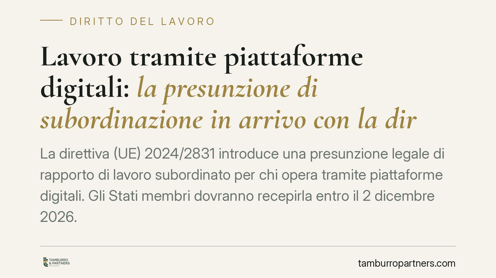

Lavoro tramite piattaforme digitali: la presunzione di subordinazione in arrivo con la direttiva UE 2024/2831
La direttiva (UE) 2024/2831 introduce una presunzione legale di rapporto di lavoro subordinato per chi opera tramite piattaforme digitali. Gli Stati membri dovranno recepirla entro il 2 dicembre 2026. In Italia il meccanismo diventerà operativo solo con il decreto di attuazione, ancora da adottare. Cambieranno gli equilibri probatori tra piattaforme e lavoratori: ecco i punti fermi e quelli ancora aperti.

Il quadro: una direttiva, non ancora una legge italiana
La direttiva (UE) 2024/2831, pubblicata in Gazzetta Ufficiale dell'Unione l'11 dicembre 2024 ed entrata in vigore il 1° dicembre 2024, disciplina il lavoro mediante piattaforme digitali. Il suo obiettivo dichiarato è contrastare la classificazione errata dei rapporti di lavoro (il cosiddetto *misclassification*): situazioni in cui un lavoratore formalmente autonomo opera, di fatto, come un dipendente.
Attenzione a due date che non vanno confuse. Il 2 dicembre 2026 è il termine entro cui gli Stati membri devono recepire la direttiva nel diritto interno. Non è, di per sé, la data in cui la presunzione comincerà a operare in Italia: ciò dipenderà dal decreto legislativo di attuazione, non ancora adottato, e dalle scelte che il legislatore nazionale compirà nell'esercizio della delega. Salvo diverse previsioni del decreto di recepimento, è prudente considerare quella data come orizzonte di riferimento, non come scadenza già efficace.
La presunzione legale di rapporto di lavoro
Il cuore della direttiva è una presunzione legale: quando emergono indizi di direzione e controllo da parte della piattaforma, il rapporto si presume di lavoro subordinato. Si tratta di una presunzione relativa (*iuris tantum*): può essere superata con prova contraria. Diverso sarebbe il caso di una presunzione assoluta (*iuris et de iure*), che non ammette prova in senso opposto e che qui non ricorre.
L'effetto pratico più rilevante è l'inversione dell'onere della prova. Oggi è di regola il lavoratore a dover dimostrare la natura subordinata del rapporto. Con la presunzione, sarà la piattaforma a dover provare che il rapporto è genuinamente autonomo.
Qui serve una precisazione sul meccanismo. Rispetto alla proposta iniziale della Commissione, che fissava una soglia numerica di criteri da soddisfare, la versione definitiva ha affidato agli Stati membri la determinazione degli indici di direzione e controllo rilevanti. Non esiste più una griglia europea uniforme: ogni ordinamento nazionale definirà i propri indicatori, in coerenza con la direttiva e con la giurisprudenza interna. Per questo il contenuto concreto della presunzione in Italia resterà incerto fino al decreto di recepimento.
Cosa sono direzione e controllo
I poteri di direzione e controllo si manifestano, in via tipica, attraverso elementi come:
- la determinazione o il tetto massimo del compenso;
- l'imposizione di regole su aspetto, condotta o modalità di esecuzione;
- il monitoraggio elettronico della prestazione;
- la limitazione della libertà di organizzare l'orario o i periodi di attività (ad esempio turni, disponibilità, rifiuto degli incarichi);
- la restrizione della possibilità di costruire una clientela propria o di lavorare per terzi.
Sarà il decreto nazionale a stabilire quali di questi indici, e in che combinazione, facciano scattare la presunzione.
Chi resta fuori
La direttiva non si applica ai lavoratori genuinamente autonomi. In particolare, restano escluse le professioni intellettuali con iscrizione ad albo, laddove la prestazione sia svolta in regime effettivamente libero-professionale. Resta ferma, in ogni caso, la verifica della concreta modalità di svolgimento del rapporto.
Le tutele: non arrivano dalla direttiva, ma dalla qualificazione
Un equivoco da evitare. La direttiva non introduce una retribuzione minima né un pacchetto autonomo di diritti. Le tutele — ferie, limiti di orario, copertura contributiva e previdenziale, disciplina dei licenziamenti — discendono dall'applicazione dello statuto del lavoro subordinato nazionale. In altre parole: una volta che il rapporto è qualificato come subordinato, si applicano le regole che l'ordinamento italiano già riconnette a quella qualifica.
Cosa fare in concreto
Per le piattaforme digitali:
- Mappate ora i rapporti in essere, individuando gli indici di direzione e controllo effettivamente esercitati.
- Rivedete algoritmi di assegnazione, sistemi di rating e clausole contrattuali che incidono su orario, compenso e libertà organizzativa.
- Costruite e conservate la documentazione utile a dimostrare l'eventuale autonomia genuina del rapporto.
- Monitorate l'iter del decreto di recepimento per adeguare i modelli operativi agli indici che saranno adottati in Italia.
Per i lavoratori (rider, autisti e figure analoghe):
- Raccogliete e conservate le prove delle modalità concrete di lavoro: istruzioni ricevute, vincoli di orario, sistemi di controllo, comunicazioni della piattaforma.
Un punto fermo
Anche dopo il recepimento, la qualificazione del rapporto resterà una questione di fatto, da valutare caso per caso. La presunzione sposta l'onere della prova, non elimina l'accertamento concreto. Consigliamo di non attendere la scadenza del 2026 per analizzare la propria posizione.
Ogni storia di lavoro ha i suoi tempi.
Se gestisci HR e vuoi un confronto su contenzioso, ispezioni o licenziamenti, scrivi allo studio. Ti rispondiamo entro un giorno lavorativo.